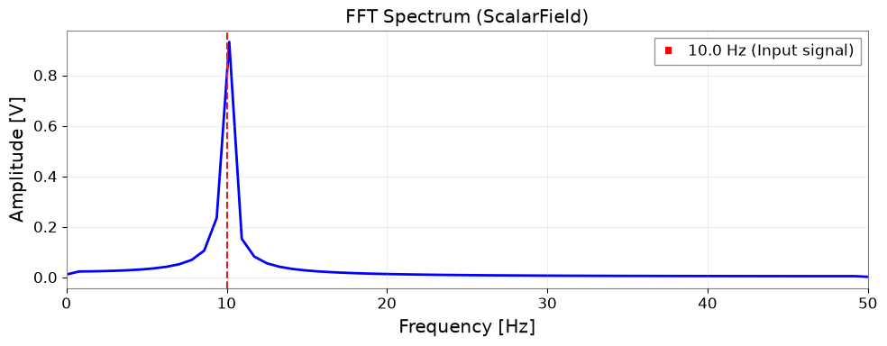
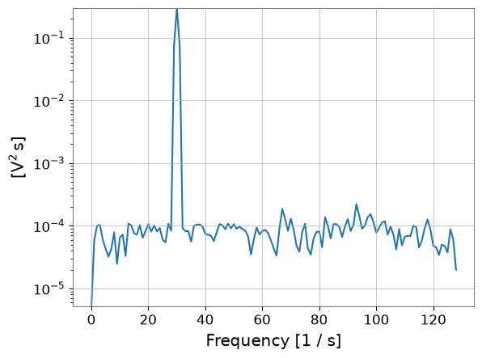

Field API: ScalarField の基本#
このノートブックでは、gwexpy の ScalarField クラスの基本的な使い方を学びます。
ScalarField とは？#
ScalarField は、時間と3次元空間の4次元データを扱うための特殊なクラスです。物理場の時空間構造を表現し、以下の機能を提供します：
軸0（時間軸）: 時間ドメイン ↔ 周波数ドメインの変換
軸1-3（空間軸）: 実空間 ↔ K空間（波数空間）の変換
4D構造の保持: スライシングしても常に4次元を維持
バッチ操作:
FieldListとFieldDictによる複数フィールドの一括処理信号処理: PSD計算、周波数-空間マッピング、相互相関、コヒーレンスマップ
準備#
必要なライブラリをインポートします。
# Suppress SWIGLAL and other warnings for clean output
import warnings
warnings.filterwarnings("ignore", "Wswiglal-redir-stdio")
warnings.filterwarnings("ignore", category=UserWarning)
# Helper functions for visualization
def show_field_info(field, title="Field Information"):
"""Display field metadata as a formatted table"""
import pandas as pd
from IPython.display import HTML, display
info = {
'Property': ['Shape', 'Time Domain', 'Space Domains', 'Axis 0', 'Axis 1', 'Axis 2', 'Axis 3'],
'Value': [
str(field.shape),
field.time_domain,
str(field.space_domains),
f"{field.axis0_name} ({field.shape[0]} points)",
f"{field.axis1_name} ({field.shape[1]} points)",
f"{field.axis2_name} ({field.shape[2]} points)",
f"{field.axis3_name} ({field.shape[3]} points)"
]
}
df = pd.DataFrame(info)
display(HTML(f"<h4>{title}</h4>"))
display(df.to_html(index=False, border=1))
def compare_fields(field1, field2, name1="Original", name2="Processed"):
"""Compare two fields side by side"""
import pandas as pd
from IPython.display import HTML, display
comparison = {
'Property': ['Shape', 'Time Domain', 'Space Domains', 'Max Difference'],
name1: [
str(field1.shape),
field1.time_domain,
str(field1.space_domains),
'N/A'
],
name2: [
str(field2.shape),
field2.time_domain,
str(field2.space_domains),
f"{np.max(np.abs(field1.value - field2.value)):.2e}"
]
}
df = pd.DataFrame(comparison)
display(HTML("<h4>Field Comparison</h4>"))
display(df.to_html(index=False, border=1))
import matplotlib.pyplot as plt
import numpy as np
from astropy import units as u
from gwexpy.fields import FieldDict, FieldList, ScalarField
# Set seed for reproducibility
np.random.seed(42)
1. ScalarField の初期化とメタデータ#
ScalarField オブジェクトを作成し、そのメタデータを確認します。
# Create 4D data (10 time points × 8×8×8 spatial grid)
nt, nx, ny, nz = 10, 8, 8, 8
data = np.random.randn(nt, nx, ny, nz)
# Define axis coordinates
t = np.arange(nt) * 0.1 * u.s
x = np.arange(nx) * 0.5 * u.m
y = np.arange(ny) * 0.5 * u.m
z = np.arange(nz) * 0.5 * u.m
# Create ScalarField object
field = ScalarField(
data,
unit=u.V,
axis0=t,
axis1=x,
axis2=y,
axis3=z,
axis_names=["t", "x", "y", "z"],
axis0_domain="time",
space_domain="real",
)
print(f"Shape: {field.shape}")
print(f"Unit: {field.unit}")
print(f"Axis names: {field.axis_names}")
print(f"Axis0 domain: {field.axis0_domain}")
print(f"Space domains: {field.space_domains}")
Shape: (10, 8, 8, 8)
Unit: V
Axis names: ('t', 'x', 'y', 'z')
Axis0 domain: time
Space domains: {'x': 'real', 'y': 'real', 'z': 'real'}
メタデータの確認#
axis0_domain: 軸0のドメイン（"time" または "frequency"）space_domains: 各空間軸のドメイン（"real" または "k"）axis_names: 各軸の名前
これらのメタデータは、FFT変換時に自動的に更新されます。
2. 4D構造を保持するスライシング#
ScalarField の重要な特徴は、スライシングしても常に4次元を維持することです。 整数インデックスを使っても、自動的に長さ1のスライスに変換されます。
注意: np.squeeze() のような軸を落とす処理は、Field API の外に出たい場合に限って使ってください。長さ1の軸を保つことで、軸メタデータが維持され、その後の FFT や可視化でも扱いを誤りにくくなります。
# Slice with integer index (would become 3D with regular ndarray)
sliced = field[0, :, :, :]
print(f"Original shape: {field.shape}")
print(f"Sliced shape: {sliced.shape}") # (1, 8, 8, 8) - maintains 4D!
print(f"Type: {type(sliced)}") # Still a ScalarField
print(f"Axis names preserved: {sliced.axis_names}")
Original shape: (10, 8, 8, 8)
Sliced shape: (1, 8, 8, 8)
Type: <class 'gwexpy.fields.scalar.ScalarField'>
Axis names preserved: ('t', 'x', 'y', 'z')
# Use integer indices on multiple axes
sliced_multi = field[0, 1, 2, 3]
print(f"Multi-sliced shape: {sliced_multi.shape}") # (1, 1, 1, 1) - still 4D
print(f"Value: {sliced_multi.value}")
Multi-sliced shape: (1, 1, 1, 1)
Value: [[[[-0.51827022]]]]
この挙動により、ScalarFieldオブジェクトの一貫性が保たれ、メタデータ（軸名やドメイン情報）が失われることがありません。
3. 時間-周波数変換（軸0のFFT）#
fft_time() と ifft_time() メソッドを使って、時間軸を周波数軸に変換できます。 GWpy の TimeSeries.fft() と同じ正規化を採用しています。
# Create ScalarField in time domain (sine wave)
t_dense = np.arange(128) * 0.01 * u.s
x_small = np.arange(4) * 1.0 * u.m
signal_freq = 10.0 # Hz
# Place a 10 Hz sine wave uniformly in space
data_signal = np.sin(2 * np.pi * signal_freq * t_dense.value)[:, None, None, None]
data_signal = np.tile(data_signal, (1, 4, 4, 4))
field_time = ScalarField(
data_signal,
unit=u.V,
axis0=t_dense,
axis1=x_small,
axis2=x_small.copy(),
axis3=x_small.copy(),
axis_names=["t", "x", "y", "z"],
axis0_domain="time",
space_domain="real",
)
# Execute FFT
field_freq = field_time.fft_time()
print(f"Time domain shape: {field_time.shape}")
print(f"Frequency domain shape: {field_freq.shape}")
print(f"Axis0 domain changed: {field_time.axis0_domain} → {field_freq.axis0_domain}")
Time domain shape: (128, 4, 4, 4)
Frequency domain shape: (65, 4, 4, 4)
Axis0 domain changed: time → frequency
# Plot frequency spectrum (select one point in x,y,z)
# Note: Since 4D structure is maintained even after slicing, squeeze() is used to reduce dimensions
spectrum = np.abs(field_freq[:, 0, 0, 0].value).squeeze()
freqs = field_freq._axis0_index.value
plt.figure(figsize=(10, 4))
plt.plot(freqs, spectrum, "b-", linewidth=2)
plt.axvline(
signal_freq, color="r", linestyle="--", label=f"{signal_freq} Hz (Input signal)"
)
plt.xlabel("Frequency [Hz]")
plt.ylabel("Amplitude [V]")
plt.title("FFT Spectrum (ScalarField)")
plt.xlim(0, 50)
plt.legend()
plt.grid(True, alpha=0.3)
plt.tight_layout()
plt.show()
# Check peak frequency
peak_idx = np.argmax(spectrum)
peak_freq = freqs[peak_idx]
print(f"Peak frequency: {peak_freq:.2f} Hz (expected: {signal_freq} Hz)")

Peak frequency: 10.16 Hz (expected: 10.0 Hz)
逆FFT（周波数 → 時間）#
ifft_time() で元の時間ドメインに戻すことができます。
# Inverse FFT
field_reconstructed = field_freq.ifft_time()
# Compare with original signal
# Note: squeeze() to 1D to maintain 4D structure
original = field_time[:, 0, 0, 0].value.squeeze()
reconstructed = field_reconstructed[:, 0, 0, 0].value.squeeze()
plt.figure(figsize=(10, 4))
plt.plot(t_dense.value, original, "b-", label="Original", alpha=0.7)
plt.plot(t_dense.value, reconstructed.real, "r--", label="Reconstructed", alpha=0.7)
plt.xlabel("Time [s]")
plt.ylabel("Amplitude [V]")
plt.title("IFFT: Frequency → Time")
plt.legend()
plt.grid(True, alpha=0.3)
plt.tight_layout()
plt.show()
# Check error
error = np.abs(original - reconstructed.real)
print(f"Max reconstruction error: {np.max(error):.2e} V")

Max reconstruction error: 4.44e-16 V
4. 実空間-K空間変換（空間軸のFFT）#
fft_space() と ifft_space() を使って、空間軸を波数空間（K空間）に変換できます。 角波数 k = 2π / λ の符号付きFFTを使用します。
# Create data with periodic structure in space
nx, ny, nz = 16, 16, 16
x_grid = np.arange(nx) * 0.5 * u.m
y_grid = np.arange(ny) * 0.5 * u.m
z_grid = np.arange(nz) * 0.5 * u.m
# Sine wave with wavelength 4m in X direction
wavelength = 4.0 # m
k_expected = 2 * np.pi / wavelength # rad/m
data_spatial = np.sin(2 * np.pi * x_grid.value / wavelength)[None, :, None, None]
data_spatial = np.tile(data_spatial, (4, 1, ny, nz))
field_real = ScalarField(
data_spatial,
unit=u.V,
axis0=np.arange(4) * 0.1 * u.s,
axis1=x_grid,
axis2=y_grid,
axis3=z_grid,
axis_names=["t", "x", "y", "z"],
axis0_domain="time",
space_domain="real",
)
# FFT only on X axis
field_kx = field_real.fft_space(axes=["x"])
print(f"Original space domains: {field_real.space_domains}")
print(f"After fft_space: {field_kx.space_domains}")
print(f"Axis names: {field_kx.axis_names}")
Original space domains: {'x': 'real', 'y': 'real', 'z': 'real'}
After fft_space: {'y': 'real', 'z': 'real', 'kx': 'k'}
Axis names: ('t', 'kx', 'y', 'z')
# Plot K-space spectrum
# Note: squeeze() to reduce dimensions
kx_spectrum = np.abs(field_kx[0, :, 0, 0].value).squeeze()
kx_values = field_kx._axis1_index.value
plt.figure(figsize=(10, 4))
plt.plot(kx_values, kx_spectrum, "b-", linewidth=2)
plt.axvline(k_expected, color="r", linestyle="--", label=f"k = {k_expected:.2f} rad/m")
plt.axvline(-k_expected, color="r", linestyle="--")
plt.xlabel("Wavenumber kx [rad/m]")
plt.ylabel("Amplitude")
plt.title("Spatial FFT: Real → K space")
plt.legend()
plt.grid(True, alpha=0.3)
plt.tight_layout()
plt.show()
# Check peak wavenumber
peak_idx = np.argmax(kx_spectrum)
peak_k = kx_values[peak_idx]
print(f"Peak wavenumber: {peak_k:.2f} rad/m (expected: ±{k_expected:.2f} rad/m)")

Peak wavenumber: 1.57 rad/m (expected: ±1.57 rad/m)
波長の計算#
K空間では、wavelength() メソッドで波長を計算できます。
# Calculate wavelength
wavelengths = field_kx.wavelength("kx")
print(f"Wavelength at k={k_expected:.2f}: {2 * np.pi / k_expected:.2f} m")
print(
f"Calculated wavelengths range: {wavelengths.value[wavelengths.value > 0].min():.2f} - {wavelengths.value[wavelengths.value < np.inf].max():.2f} m"
)
Wavelength at k=1.57: 4.00 m
Calculated wavelengths range: 1.00 - 8.00 m
全空間軸のFFT#
axes パラメータを省略すると、全空間軸をまとめてFFTできます。
# FFT on all spatial axes
field_k_all = field_real.fft_space()
print(f"All spatial axes in K space: {field_k_all.space_domains}")
# Return to original with inverse FFT
field_real_back = field_k_all.ifft_space()
print(f"Back to real space: {field_real_back.space_domains}")
# Reconstruction error
reconstruction_error = np.max(np.abs(field_real.value - field_real_back.value))
print(f"Max reconstruction error: {reconstruction_error:.2e}")
All spatial axes in K space: {'kx': 'k', 'ky': 'k', 'kz': 'k'}
Back to real space: {'x': 'real', 'y': 'real', 'z': 'real'}
Max reconstruction error: 2.29e-16
5. FieldList と FieldDict によるバッチ操作#
複数の ScalarField オブジェクトをまとめて処理するには、FieldList または FieldDict を使用します。
FieldList#
リスト形式で複数のフィールドを管理し、一括でFFT操作を適用できます。
# Create three ScalarFields with different amplitudes
amplitudes = [1.0, 2.0, 3.0]
fields = []
for amp in amplitudes:
data_temp = amp * np.random.randn(8, 4, 4, 4)
field_temp = ScalarField(
data_temp,
unit=u.V,
axis0=np.arange(8) * 0.1 * u.s,
axis1=np.arange(4) * 0.5 * u.m,
axis2=np.arange(4) * 0.5 * u.m,
axis3=np.arange(4) * 0.5 * u.m,
axis_names=["t", "x", "y", "z"],
axis0_domain="time",
space_domain="real",
)
fields.append(field_temp)
# Create FieldList
field_list = FieldList(fields, validate=True)
print(f"Number of fields: {len(field_list)}")
Number of fields: 3
# Execute time FFT in bulk
field_list_freq = field_list.fft_time_all()
print("All fields transformed to frequency domain:")
for i, field in enumerate(field_list_freq):
print(f" Field {i}: axis0_domain = {field.axis0_domain}")
All fields transformed to frequency domain:
Field 0: axis0_domain = frequency
Field 1: axis0_domain = frequency
Field 2: axis0_domain = frequency
FieldDict#
辞書形式で名前付きフィールドを管理します。
# Create dictionary of named fields
field_dict = FieldDict(
{"channel_A": fields[0], "channel_B": fields[1], "channel_C": fields[2]},
validate=True,
)
print(f"Field names: {list(field_dict.keys())}")
Field names: ['channel_A', 'channel_B', 'channel_C']
# Execute spatial FFT in bulk
field_dict_k = field_dict.fft_space_all(axes=["x", "y"])
for name, field in field_dict_k.items():
print(f"{name}: {field.space_domains}")
channel_A: {'z': 'real', 'kx': 'k', 'ky': 'k'}
channel_B: {'z': 'real', 'kx': 'k', 'ky': 'k'}
channel_C: {'z': 'real', 'kx': 'k', 'ky': 'k'}
6. 信号処理と解析#
物理場の解析において重要な信号処理手法として、以下を実演します：
PSD計算: 時間・空間方向のパワースペクトル密度
周波数-空間マッピング: 空間的に周波数がどう変化するか可視化
相互相関: 信号の伝搬遅延の推定
コヒーレンスマップ: 空間的なコヒーレンスの可視化
# Generate simulation data
# Signal: 30 Hz sine wave propagating from x=1m
# Noise: Gaussian noise
fs = 256 * u.Hz
duration = 4 * u.s
t = np.arange(int((fs * duration).to_value(u.dimensionless_unscaled))) / fs.value
x = np.linspace(0, 5, 20) # 5m, 20 points
y = np.linspace(0, 2, 5) # 2m, 5 points
z = np.array([0]) # z=0
shape = (len(t), len(x), len(y), len(z))
data_sig = np.random.normal(0, 0.1, size=shape)
source_freq = 30.0
source_signal = np.sin(2 * np.pi * source_freq * t)
v_prop = 10.0 # 10 m/s
source_pos = 1.0
for i, xi in enumerate(x):
dist = abs(xi - source_pos)
delay = dist / v_prop
shift = int(delay * fs.value)
sig_delayed = np.roll(source_signal, shift)
amp = 1.0 / (1.0 + dist)
data_sig[:, i, :, 0] += amp * sig_delayed[:, np.newaxis]
field_sig = ScalarField(
data_sig,
unit=u.V,
axis0=t * u.s,
axis1=x * u.m,
axis2=y * u.m,
axis3=z * u.m,
name="Environmental Field",
)
print(field_sig)
ScalarField([[[[ 0.08684844],
[ 0.36739322],
[ 0.20264566],
[ 0.24368612],
[ 0.29709332]],
[[-0.42828167],
[-0.2788319 ],
[-0.63601112],
[-0.43725569],
[-0.45766302]],
[[-0.50234469],
[-0.39848957],
[-0.33841909],
[-0.30672809],
[-0.35290641]],
...,
[[-0.24582327],
[-0.36331307],
[-0.35576048],
[-0.30664571],
[-0.29873314]],
[[-0.25188483],
[-0.10460112],
[-0.20704192],
[-0.17437447],
[-0.06699974]],
[[-0.01857532],
[ 0.03160235],
[ 0.09463293],
[-0.13609984],
[-0.18043362]]],
[[[ 0.4965515 ],
[ 0.51114119],
[ 0.66836178],
[ 0.47774925],
[ 0.54391374]],
[[ 0.00870382],
[ 0.05797381],
[ 0.19497677],
[-0.1841482 ],
[ 0.06961271]],
[[-0.44467682],
[-0.63003207],
[-0.4931782 ],
[-0.72115671],
[-0.66144024]],
...,
[[-0.26696884],
[-0.02335534],
[-0.2955512 ],
[ 0.03365938],
[-0.16675011]],
[[-0.01148699],
[ 0.02693153],
[ 0.23230027],
[-0.12005181],
[-0.1327343 ]],
[[ 0.0960591 ],
[ 0.17476004],
[-0.00103139],
[ 0.17377965],
[ 0.34090044]]],
[[[ 0.48591277],
[ 0.44150349],
[ 0.40895599],
[ 0.5606232 ],
[ 0.38818876]],
[[ 0.59176168],
[ 0.60045806],
[ 0.43279717],
[ 0.40597058],
[ 0.51018807]],
[[-0.48896672],
[-0.67904575],
[-0.65110209],
[-0.73068132],
[-0.55754008]],
...,
[[-0.00889405],
[ 0.0246277 ],
[-0.00934052],
[-0.28479022],
[ 0.00294349]],
[[-0.05809312],
[ 0.21557047],
[ 0.08898029],
[ 0.19601207],
[-0.00748609]],
[[ 0.31327382],
[ 0.04965958],
[ 0.12931156],
[ 0.09634759],
[ 0.02072857]]],
...,
[[[-0.47088405],
[-0.44093954],
[-0.50808846],
[-0.53825154],
[-0.52270623]],
[[-0.27016794],
[-0.05885403],
[-0.03014553],
[-0.11945106],
[-0.22574645]],
[[ 0.67186813],
[ 0.65758934],
[ 0.61808806],
[ 0.68006628],
[ 0.64916691]],
...,
[[ 0.33427533],
[ 0.1238872 ],
[ 0.23921193],
[ 0.13288922],
[ 0.17767688]],
[[-0.09293398],
[ 0.04599217],
[-0.04333049],
[-0.14249861],
[-0.14613857]],
[[-0.17523055],
[-0.08070457],
[-0.3736138 ],
[-0.21547623],
[-0.24905171]]],
[[[-0.33979978],
[-0.52516958],
[-0.43117016],
[-0.55575497],
[-0.30922288]],
[[-0.57172495],
[-0.36253384],
[-0.47323134],
[-0.56822764],
[-0.41788518]],
[[ 0.60000133],
[ 0.69520425],
[ 0.58067915],
[ 0.59044121],
[ 0.60903589]],
...,
[[ 0.09738152],
[-0.03127321],
[ 0.10558964],
[ 0.02092155],
[ 0.12403775]],
[[-0.17854237],
[-0.15159656],
[-0.13889632],
[-0.10361625],
[-0.07109176]],
[[-0.30326966],
[-0.18659539],
[-0.17075845],
[ 0.12720352],
[-0.09463939]]],
[[[-0.13293935],
[-0.26827271],
[-0.16340608],
[ 0.0859768 ],
[-0.29470039]],
[[-0.59042514],
[-0.43746394],
[-0.34756977],
[-0.58880771],
[-0.50722801]],
[[ 0.19803234],
[ 0.1693735 ],
[ 0.13092929],
[ 0.23941187],
[ 0.22039804]],
...,
[[-0.17123032],
[-0.04474158],
[-0.08665946],
[-0.00431457],
[-0.00958998]],
[[-0.12704775],
[-0.18034525],
[-0.24545939],
[-0.26021225],
[-0.27972791]],
[[-0.10539607],
[ 0.00241909],
[ 0.01135068],
[-0.2382848 ],
[-0.06614197]]]],
unit: V,
name: Environmental Field,
epoch: None,
channel: None,
axis_names: ['t', 'x', 'y', 'z'],
axis0_name: t,
axis1_name: x,
axis2_name: y,
axis3_name: z,
axis0_index: [0.00000000e+00 3.90625000e-03 7.81250000e-03 ... 3.98828125e+00
3.99218750e+00 3.99609375e+00] s,
axis1_index: [0. 0.26315789 0.52631579 0.78947368 1.05263158
1.31578947 1.57894737 1.84210526 2.10526316 2.36842105
2.63157895 2.89473684 3.15789474 3.42105263 3.68421053
3.94736842 4.21052632 4.47368421 4.73684211 5. ] m,
axis2_index: [0. 0.5 1. 1.5 2. ] m,
axis3_index: [0.] m,
axis0_domain: time,
space_domains: {'x': 'real', 'y': 'real', 'z': 'real'},
axis0_offset: None)
パワースペクトル密度 (PSD)#
特定の位置でのPSDを計算し、周波数成分を確認します。
# Compare PSD at source position (x=1m) and far field (x=4m)
psd_source = field_sig.psd(point_or_region=(1.0 * u.m, 0.0 * u.m, 0.0 * u.m))
psd_far = field_sig.psd(point_or_region=(4.0 * u.m, 0.0 * u.m, 0.0 * u.m))
plt.figure(figsize=(10, 6))
psd_source.plot(label="Source (x=1m)")
psd_far.plot(label="Far (x=4m)")
plt.xscale("log")
plt.yscale("log")
plt.title("PSD at Different Locations")
plt.legend()
plt.show()
<Figure size 1000x600 with 0 Axes>


周波数-空間マッピング（近日公開）#
注意: plot_freq_space() 可視化メソッドは今後のリリースで提供予定です。
現時点では、標準のmatplotlibを使用して周波数-空間データを手動で抽出・プロット可能です：
# Extract PSD at different spatial positions
# (Manual visualization example - coming in v0.2.0)
このセクションは、可視化APIが実装され次第更新されます。
# Visualization method plot_freq_space() will be available in v0.2.0
#
# Example usage (future):
# field_sig.plot_freq_space(
# space_axis="x",
# fixed_coords={"y": 0.0 * u.m, "z": 0.0 * u.m},
# freq_range=(10, 100),
# log_scale=True,
# )
print("Note: Frequency-space visualization will be added in a future release")
Note: Frequency-space visualization will be added in a future release
相互相関と遅延推定#
基準点（ソース位置）と他の位置との相互相関を計算し、信号の伝搬遅延を可視化します。
# plot_cross_correlation() visualization method will be available in v0.2.0
#
# Example usage (future):
# Use x=1.0m (source) as reference point
# ref_point = (1.0 * u.m, 0.0 * u.m, 0.0 * u.m)
#
# # Calculate and plot cross-correlation
# lags, corrs = field_sig.plot_cross_correlation(
# ref_point=ref_point,
# scan_axis="x",
# fixed_coords={"y": 0.0 * u.m, "z": 0.0 * u.m},
# max_lag=0.5,
# )
print("Note: Cross-correlation visualization will be added in a future release")
Note: Cross-correlation visualization will be added in a future release
傾きがV字型になっていることから、信号が x=1.0m から両側に伝搬していることがわかります。
コヒーレンスマップ#
特定周波数（ここでは30Hz）における空間的なコヒーレンスを表示します。
# plot_coherence_map() visualization method will be available in v0.2.0
#
# Example usage (future):
# field_sig.plot_coherence_map(
# target_freq=30.0,
# ref_point=ref_point,
# scan_axis="x",
# fixed_coords={"y": 0.0 * u.m, "z": 0.0 * u.m},
# )
print("Note: Coherence map visualization will be added in a future release")
Note: Coherence map visualization will be added in a future release
6. 数値的不変量の検証#
FFT変換の正確性を検証するため、往復変換（round-trip）が元のデータを再構成できることを確認します。
次に見る項目#
関連 API: Fields API、ScalarField ガイド
関連理論: スカラー場のスライス操作ガイド、検証済みアルゴリズム
# Time FFT invariant check: ifft_time(fft_time(f)) ≈ f
np.random.seed(42)
data_test = np.random.randn(64, 4, 4, 4)
field_test = ScalarField(
data_test,
unit=u.V,
axis0=np.arange(64) * 0.01 * u.s,
axis1=np.arange(4) * u.m,
axis2=np.arange(4) * u.m,
axis3=np.arange(4) * u.m,
axis_names=["t", "x", "y", "z"],
axis0_domain="time",
space_domain="real",
)
# Round-trip
field_roundtrip = field_test.fft_time().ifft_time()
# Check
max_error_time = np.max(np.abs(field_test.value - field_roundtrip.value.real))
print(f"Time FFT Round-trip max error: {max_error_time:.2e}")
assert max_error_time < 1e-10, "Time FFT round-trip failed!"
print("Time FFT invariant check: PASSED")
Time FFT Round-trip max error: 9.99e-16
Time FFT invariant check: PASSED